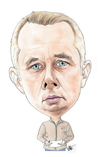

Jokić izabran u najbolju petorku NBA
Srpski košarkaš i član Denver Nagetsa Nikola Jokić izabran je u najbolju petorku NBA lige za sezonu 2018/19.
Pored njega, u najboljoj ekipi sezone su Stefon Kari iz Golden Stejta, Džejms Harden iz Hjustona, Janis Adetokumbo iz Milvokija i Pol Džordž iz Oklahome.
Kultura
„Zlatna palma” putuje u Južnu Koreju
Nov 12
Film „Parazit” Bong Jon Hoa proglašen za najbolji, Gran pri za „Atlantik”, Dardenovi su najbolji reditelji, a Antonio Banderas najbolji glumac. – Svi nagrađeni filmovi otkupljeni za prikazivanje u Srbiji
Nastavi sa čitanjem...
Hronika
Borac za živote dece
Nov 11
Posle dve i po godine bespoštedne borbe da se u srpsko zakonodavstvo za najteža krivična dela uvede kazna doživotnog zatvora, bez prava na uslovni otpust, Igor Jurić je odahnuo. Nije, kako je priznao, mogao da se raduje.
Nastavi sa čitanjem...